Rock music is a genre of popular music that originated as "rock and roll" in the United States in the 1950s, and developed into a range of different styles in the 1960s and later, particularly in the United Kingdom and the United States. It has its roots in 1940s' and 1950s' rock and roll, itself heavily influenced by blues, rhythm and blues and country music. Rock music also drew strongly on a number of other genres such as electric blues and folk, and incorporated influences from jazz, classical and other musical sources.
Musically, rock has centered on the electric guitar, usually as part of a rock group with electric bass guitar and drums. Typically, rock is song-based music usually with a 4/4 time signature using a verse-chorus form, but the genre has become extremely diverse. Like pop music, lyrics often stress romantic love but also address a wide variety of other themes that are frequently social or political in emphasis. The dominance of rock by white, male musicians has been seen as one of the key factors shaping the themes explored in rock music. Rock places a higher degree of emphasis on musicianship, live performance, and an ideology of authenticity than pop music.
By the late 1960s, referred to as the "golden age" or "classic rock" period, a number of distinct rock music subgenres had emerged, including hybrids like blues rock, folk rock, country rock, raga rock, and jazz-rock, many of which contributed to the development of psychedelic rock, which was influenced by the countercultural psychedelic scene. New genres that emerged from this scene included progressive rock, which extended the artistic elements; glam rock, which highlighted showmanship and visual style; and the diverse and enduring subgenre of heavy metal, which emphasized volume, power, and speed. In the second half of the 1970s, punk rock reacted against the perceived overblown, inauthentic and overly mainstream aspects of these genres to produce a stripped-down, energetic form of music valuing raw expression and often lyrically characterised by social and political critiques. Punk was an influence into the 1980s on the subsequent development of other subgenres, including new wave, post-punk and eventually the alternative rock movement. From the 1990s alternative rock began to dominate rock music and break through into the mainstream in the form of grunge, Britpop, and indie rock. Further fusion subgenres have since emerged, including pop punk, rap rock, and rap metal, as well as conscious attempts to revisit rock's history, including the garage rock/post-punk and synthpop revivals at the beginning of the new millennium.
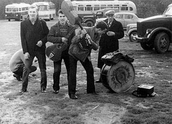
Rock and roll became known in the Soviet Union in the 1960s and quickly broke free from its western roots. According to many music critics, its "golden age" years were the 1980s (especially the era of perestroika), when the Soviet underground rock bands could release their records officially. The great majority of the bands perform in the Russian language.
Characteristics:
Fans of Russian Rock would frequently refer to most of the music on MTV Russia dismissively as "popsa", a dichotomy that appeared in the '80s when government controlled radio and TV stations would air only politically harmless music by performers such as Philipp Kirkorov. The lines are still quite clearly drawn, with bands such as Nogu Svelo! - who recorded a song with pop-singer Nataliya Vetlitskaya - being an anomaly.
In contrast to Western rock, Russian rock is often said to have less drive; it is characterized by different rhythms, instruments and more involved lyrics. Unconventional instruments have often been used in addition to the standard electric guitars and drums (very often violin and wind instruments).
Another characteristic of Russian Rock is being partly Folk rock. Very often Russian Rock songs, especially those of the classic 80s bands, talk about national themes and feature elements from Russian folk music. Aquarium, DDT and Yuri Morozov could be used as examples for that.
Considering its poetic roots (Russian literature, bard music), it is not a big surprise that lyrics play a far larger role in Russian rock than Western rock. Vocal melody is sometimes eschewed in favor of a more impassioned delivery (Viktor Tsoi, the lead singer of Kino, pioneered a characteristically strained, monotonous style of singing that has been imitated by many).
Russia has always been facing both East and West with its double-headed Eagle on the coat-of-arms. The Eastern derivative in the Russian rock came with soundtracks from movies like Day Watch that had Tamerlan's legend of the Chalk of Destiny at its roots. Russian rock expressively used and integrated elements from culture, as well as Western and Eastern (especially countries of the USSR).
Yngvar Bordrewich Steinholt (University of Tromsø, Norway) has written a PhD thesis in English that was printed by The Mass Media Music Scholars Press titled "Rock in the Reservation" (2004) about the Leningrad Rock Club. It also touched upon the history of rock in Russia and its counter-cultural tendencies.
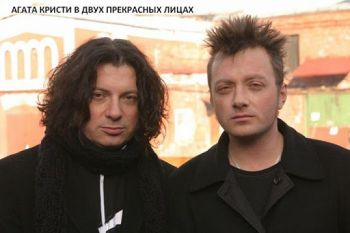
Agatha Christie (Russian: Агата Кристи) was a Soviet and Russian rock band. Formed in 1985 by Vadim Samoylov, Alexander Kozlov, and Peter Mai in Sverdlovsk. under the name VIA "RTF UPI" (Russian: ВИА «РТФ УПИ») the band changed their name to Agathe Christie, after the detective fiction author, in 1988 and went on to become one of the most notable Russian rock acts in the mid to late 1990s. During the recording sessions for their debut album "Second Front", Vadim's younger brother, Gleb, became a full-time member of the band. The band lineup changed continuously since then, with the Samoylov brothers being bandleaders, swapping vocal duties. The Samoylov brothers have been the principal songwriters of the band, together with keyboardist Alexander Kozlov.
The band's music has spanned through a variety of genres across their albums, including gothic rock, post punk, alternative rock, psychedelic rock, glam rock, art rock and hard rock.
The band has released 10 studio albums, 5 compilation albums, 2 remix albums, 3 extended plays, and 18 music videos in their career. The band announced their breakup in 2009, embarking on a final tour across Russia and nearby countries. The band released their final album "Epilogue" in 2010, and played their final concert at the Nashestvie festival that same year.
After the dissolution of Agatha Christie in 2010, the former lead singer Gleb Samoylov, together with keyboardist Konstantin Bekrev and drummer Dmitry Khakimov, formed the group The Matrixx.
Ассоциация содействия возвращению заблудшей молодёжи на стезю добродетели (кратко Ассоциация) — советская рок-группа, созданная в 1986 году в Свердловске Алексеем Могилевским и Николаем Петровым. «Ассоциация» записала шесть альбомов и прекратила своё существование в середине 90-х. Коллектив был возрожден в 2014-м году.
Name is taken from Herbert George Wells, book Mr. Ledbetter's Vacation.
Состав Группы:
• Алексей Могилевский — вокал, клавишные, саксофон, аккордеон, гитара
• Валерий Кузин — гитара, бэк-вокал
• Евгений Звидённый — бас-гитара
Дискография:
• 1986 — «Угол»
• 1987 — «Команда 33» (песни из одноимённого фильма)
• 1988 — «Калейдоскопия»
• 1989 — «Клетка для маленьких»
• 1990 — «Сторона»
• 1991 — «Щелкунчик»
• 1996 — «Greatest Hits» (сборник)
Чиж & Co or Chizh & Co is a Russian rock band. It was named The Band of a Year by Rock-Fuzz magazine in 1997.
Discography:
• 1993 - Chizh (rus. Чиж, eng. Chizh)
• 1994 - Live (rus. Live, eng. Live)
• 1995 - Perekryostok (rus. Перекресток, eng. Crossroad)
• 1995 - O Lyubvi (rus. О любви, eng. About Love)
• 1995 - Greatest Hits (rus. Greatest Hits, eng. Greatest Hits)
• 1996 - Erogennaya Zona (rus. Эрогенная зона, eng. Erogenous Zone
• 1996 - Polonez (rus. Полонез, eng. Polonaise)
• 1997 - Bombardirovschiki (rus. Бомбардировщики, eng. Bombers)
• 1997 - Lutshie Blyuzy i Ballady (rus. Лучшие блюзы и баллады, eng. The Best of Blues and Ballads)
• 1998 - Noviy Ierusalim (rus. Новый Иерусалим, eng. New Jerusalem)
• 1998 - V 20:00 po Grinvichu (rus. В 20:00 по Гринвичу, eng. At 20:00 GMT)
• 1999 - Nechego Teryat' (rus. Нечего терять, eng. Nothing to Lose)
• 2001 - Gaidnom Budu (rus. Гайдном буду, eng. I'll be Haydn)
• 2005 - SorokChetyre (rus. 44, eng. 44)
• 2007 - Na grani izumruda (rus. На грани изумруда, eng. On the Verge of Emerald)
«Комиссар» — российская музыкальная группа.
Дискография, Альбомы:
• 1991 — Наше время пришло
• 1998 — Дрянь
• 2000 — Музыка нового тысячелетия
• 2002 — Любовь — это яд
• 2013 — Короли
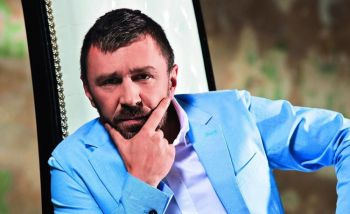
Leningrad (Russian: Ленинград), also known as Gruppirovka Leningrad (Russian: Группировка "Ленинград") and Bandformirovanie Leningrad (Russian: Бандформирование "Ленинград"), is a popular Russian rock band from Saint Petersburg (formerly Leningrad), led by Sergey "Shnur" Shnurov.
Composed of 14 members, the band was founded in the late 1990s. Leningrad worked in Gypsy punk style and soon became notorious for vulgar lyrics (including lots of Russian mat) and celebration of alcoholism. As a result, most radio stations initially avoided the band, which did not stop Leningrad's growing popularity, partly for purely aesthetic reasons, such as the rich brass sound. The band eventually made its way to radio and TV (with profanity bleeped out). Shnurov even presented several New Year's Eve TV shows.
In 2007, the group began experimenting with female backup vocals, finally choosing jazz singer Yuliya Kogan as a permanent band member.
Leningrad disbanded in 2008, and then reunited in 2010. Several new songs and videos have been released since, most of them featuring lead vocals by Kogan rather than Shnurov.
Cultural Impact:
As Shnurov said himself: "Our songs are just about the good sides of life: vodka and girls that is."
The band was so disliked by the then mayor of Moscow Yuriy Luzhkov, that he cancelled all of its attempted large-scale events in the city during his term in office. Leningrad's numerous performances in Moscow were therefore limited to privately owned night clubs and bars.
A particular focus of the band's lyrics are mainstream cultural and political clichés. Kandidaty - pidory ("Candidates are faggots"), the refrain of their 2007 song "Vybory", became a widespread post-Soviet meme referring to electoral abstention. The 2010 song I Bolsche Nikovo ("And Nobody Else (That I Love")) addresses Saint Petersburg's intended image as "Russia's cultural capital", ridiculed with the use of mat and references to alcoholism and street crime.
Shnurov is also fond of ridiculing Russian pop music and pop rock by covering the songs of popular performers and then inviting them to appear with Leningrad live on stage.
Current Line-up:
• Sergei "Shnur" Shnurov (Сергей "Шнур" Шнуров) - vocals, arrangement, lyrics, guitar, bass (1997 - 2008, 2010–present)
• Vyacheslav "Sevych" Antonov (Вячеслав "Севыч" Антонов ) - backing vocals, maracas (2000 - 2008, 2010–present)
• Aleksandr "Puzo" Popov (Александр "Пузо" Попов) - bass drum, percussion, vocals (1997 - 2008, 2010–present)
• Andrey "Antonych" Antonenko (Андрей "Антоныч" Антоненко) - tuba, arrangement, accordion, keyboards (1997 - 2008, 2010–present)
• Grigoriy "Zontik" Zontov (Григорий "Зонтик" Зонтов) - tenor saxophone (2002 - 2008, 2010–present)
• Roman "Shukher" Parygin (Роман "Шухер" Парыгин) - trumpet (2002 - 2008, 2010–present)
• Andrey "Ded" Kurayev (Андрей "Дед" Кураев) - bass (2002 - 2008, 2010–present)
• Ilya "Pianist" Rogachevskiy (Илья "Пианист" Рогачевский) - keyboard (2002 - 2008, 2010–present)
• Konstantin "Limon" Limonov (Константин "Лимон" Лимонов) - guitar (2002 - 2008, 2010–present)
• Vladislav "Valdik" Aleksandrov (Владислав "Валдик" Александров) - trombone (2002 - 2008, 2010–present)
• Aleksey Kanev "Lekha" (Алексей "Лёха" Канев) - baritone saxophone, alto saxophone (2002 - 2008, 2010–present)
• Denis Mozhin (Денис Можин) - sound director (2002 - 2008), drums (2010 - present)
• Aleksey "Micksher" Kalinin (Алексей "Микшер" Калинин) - drums, percussion (1997 - 2002, 2006-2008, 2010 - present)
• Florida Chanturia - vocals, backing vocals (2016 - present)
• Vasilisa Starshova - vocals, backing vocals (2016 - present)
• 1999 - rus. Пуля, eng. Bullet
• 1999 - rus. Мат без электричества, eng. Mat without the electricity (idiomatically, "Mat Unplugged" or "Acoustic Mat")
• 2000 - rus. Дачники, eng. Dacha People
• 2001 - rus. Пуля+ (Диск 1), eng. Bullet+ (Disc 1)
• 2001 - rus. Пуля+ (Диск 2), eng. Bullet+ (Disc 2)
• 2001 - rus. Маде ин жопа, eng. Made in the Ass
• 2002 - rus. Пираты XXI века, eng. Pirates of the 21st Century
• 2002 - rus. Точка, eng. Point
• 2003 - rus. Ленинград уделывает Америку (Диск 1), eng. Leningrad does America (Disc 1)
• 2003 - rus. Ленинград уделывает Америку (Диск 2), eng. Leningrad does America (Disc 2)
• 2003 - rus. Второй Магаданский, eng. Second Magadan
• 2003 - rus. Для миллионов, eng. For Millions
• 2004 - rus. Бабаробот, eng. Fembot
• 2004 - rus. (Не) Полное собрание сочинений, eng. (Un) Collected Works
• 2005 - rus. Хуйня, eng. Bullshit
• 2006 - rus. Хлеб, eng. Bread
• 2006 - rus. Бабье лето, eng. Indian Summer
• 2007 - rus. Аврора, eng. Aurora
• 2011 - rus. Хна, eng. Henna
• 2011 - rus. Вечный огонь, eng. The Eternal Fire
• 2012 - rus. Рыба, eng. Fish
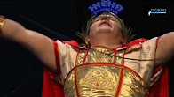
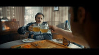
Известные официальные данные:
• Творческий псевдоним: Алексей Матов;
• Дата рождения: 1973-й год, 3 ноября;
• Знак зодиака: Скорпион;
• Род деятельности: певец, клипмейкер, автор музыки и текстов.
Биография и творчество:
Сам бард не любит откровенничать про начало жизни, говоря: «Будет ли отрада читающему, если расскажу про обычное детство?» Кстати, Матов – это не настоящая фамилия певца, а псевдоним, присоединенный к имени. Классно сказал про неопределенность в знаниях о кумире один из поклонников Алексея, Сергей Аникеев: «Ну, распишет биографию – и все! Пропадет интрига, не будет гибкости для фантазии». И его же слова: «Распространять биографию Матова, на мой взгляд, вредно. Главное – аморального он ничего не делал».
Но сквозь строчки в соц. сетях можно кое-что просмотреть о том, как жил подросток, потом юноша, и уже взрослый мужчина. Взял гитару в руки, потому что популярное хобби: играть на гитаре – не обошло и его. «Подобрал несколько песен и понял: надо писать и петь свое, а не чье-то. Сначала выходило не слишком гладко, потом – лучше, но песни начали рождаться целыми блоками», – со слов Матова из интервью на встрече игроков «WOW» в Голицыно. Первое произведение родилось, по словам автора, когда ему было 13 лет.
Начало 2010-х – расцвет творчества Алексея Матова. Регулярные релизы песен и альбомов, выступления перед живой публикой создали ему славу искреннего, эмоционального исполнителя собственных талантливых произведений. Большинство синглов посвящено военной тематике, например:
• «Полверсты смерти и огня», почти 2 млн просмотров на youtube;
• «На последнем рубеже»; около 3 млн просмотров на ютубе;
• «Аврора».
Есть у него и лирические синглы, например – «Много ли котенку надо». По стилю иногда Алексея Матова сравнивали с Виктором Цоем, но поклонники певца не соглашались: «Это эпоха похожа: перестроечная лихая молодость, полунищее начало жизни – а песни разные!» В 2016-м году бурно развивавшуюся карьеру барда прервала болезнь – Алексей пережил тяжелый инсульт. После болезни государство назначило певцу пенсию: ее Сергею Матову хватает на питание, на оплату коммунальных услуг. В 2020-м году, пока не появляясь на публике, Алексей уже активно занимается творчеством, занимаясь ремастерингом старых песен, выпуская новые альбомы.
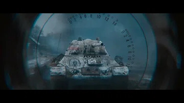
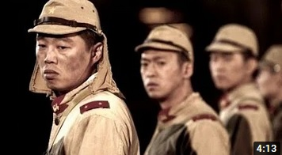
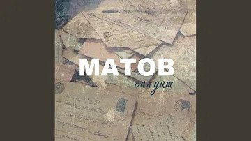
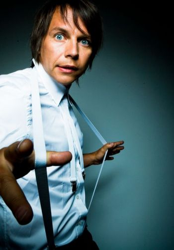
Mumiy Troll (Russian: Мумий Тролль) is a Russian rock group, founded in 1983 in Vladivostok by vocalist and songwriter Ilya Lagutenko (Илья Лагутенко). The literal name of the band, 'The mummies' troll', is a pun on Moomin Troll, the series of Finnish children's books by Tove Jansson.
• 1985 – Novaya luna aprelya (Новая луна апреля, New April Moon)
• 1990 – Delay Yu-Yu (Делай Ю-Ю, Do Yu-Yu)
• 1997 – Morskaya (Морская, Nautic)
• 1997 – Ikra (Икра, Caviar)
• 1998 – Shamora – pravda o Mumiyakh i Trollyakh (Шамора. Правда о Мумиях и Троллях, Shamora: The Truth About Mummys and Trolls)
• 1998 – S novym godom, Kroshka! (С Новым Годом, Крошка!, Happy New Year, Baby!)
• 2000 – Tochno rtut' aloe (Точно Ртуть Алоэ, Just Like Mercury Aloe Is)
• 2002 – Meeamury (Меамуры, Meamurs)
• 2004 – Pohititeli knig (Похитители Книг, The Book Thieves)
• 2005 – Sliyaniye i pogloshcheniye (Слияние и Поглощение, Merger and Acquisition)
• 2007 – Amba (Амба)
• 2008 – 8
• 2009 – Comrade Ambassador – US release (in Russian)
• 2010 – Paradise Ahead – US EP Release
• 2012 – Vladivostok
• 2013 – SOS matrosu (SOS матросу, SOS to the Sailor)
• 2015 – Piratskie kopii (Пиратские копии, Pirate Copies)
• 2016 – Malibu Alibi
• 2016 – #31E
Awards:
• 1997 The Best Still Image 1996 for Utekai (Slip Away) The Best Still Image 1997 for Delfiny (Dolphins) – the award from the Pokolenie Video Festival.
• 1997 The Best Rock Group 1997 – Ovation prize from the Russian Music Academy.
• 1997 The Best Group 1997, The Best Album 1997 for Morskaya (Nautical), The Best Song 1997 for Utekai (Slip Away), The Best Group 1998, The Best Video 1998 for Delfiny (Dolphins), The Best Video 1999 for Nevesta? (Bride?), The Best Musical Site 1999 – Russian music magazine Fuzz prize
• November 2002 Golden Disk according to the Meamories album sales in Latvia.
• 2002 Zolotoy Grammofon (Golden Gramophone) premium (for the most popular song at Russkoe Radio in 2002) was awarded for the song Eto po lyubvi (Based on Love).
• 2002 The Best Group 2002, The Best Song 2002 for Eto po lyubvi (Because of love) – the Poboroll prize from Nashe Radio.
• May 2004 Golden Disk according to the Pohititeli Knig album sales in Latvia.
• 2005 The Best Album 2005 for Sliyanie i Pogloshenie (Merger and Acquisition) – Russian music magazine Fuzz prize.
• 2006 Animation category – video clip Strakhu Net – Russian Flash Awards prize.
• 2006 For the contribution to rock-art – Russian music magazine Fuzz prize.
• 2006 Legend of MTV – MTV Russia Music Awards.
• 2008 The Best Album 2008 – Mumiy Troll, «8» – Chartova Duzhina
• 2008 The Best Music 2008 – Mumiy Troll, Contrabands – Chartova Duzhina
• 2008 Internet 2008 – Mumiy Troll, www.mumiytroll.com – Steppe Wolf
• 2008 CD 2008 – Mumiy Troll, «8» – Steppe Wolf
• 2009 The Best Group 2009 – Mumiy Troll – Chartova Duzhina
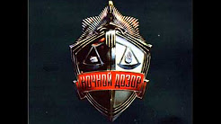
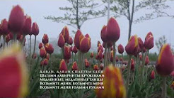
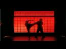
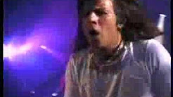
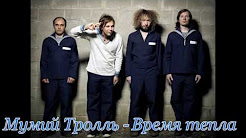
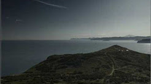
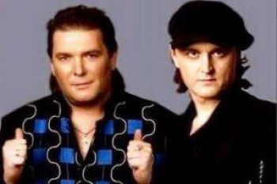
Nensi (Нэнси) is a Ukrainian-Russian musical band founded in 1992 in the city of Kostiantynivka (Donetsk Oblast) by the singer-songwriter Anatoly Bondarenko. The band is best known for its song "Dym sigaret s mentolom" ("Дым сигарет с ментолом").
Nensi received positive feedback from music critics, being credited as a successful project of contemporary pop-culture.
On 31 January 2016, one of the band members, Sergey Bondarenko, was arrested in Sheremetyevo International Airport, when returning to Russia from Germany, being accused of security threats to Russia. Later he was deported back to Germany with an interdiction to not re-enter Russia until 2018.
On 18 October 2018, Sergey Bondarenko died at the age of 31.
Василий Владимирович Гончаров (род. 21 марта 1984, Ростов-на-Дону, СССР) — российский музыкант, вокалист, поэт, композитор и музыкальный продюсер. Основатель и лидер группы «Чебоза». Более известен как Вася Обломов в связи с созданием одноимённого музыкального проекта. Один из основателей и участник музыкально-поэтического проекта «Господин хороший». Общественный деятель.
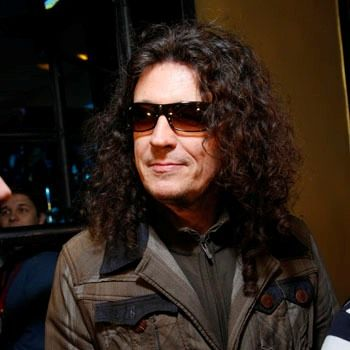
«СерьГа» — российская рок-группа, образованная в 1994 году Сергеем Галаниным. Девиз группы — «Для тех, у кого есть уши».
Состав:
• Сергей Галанин — вокал, акустическая гитара, электрогитара, электроакустическая гавайская гитара.
• Андрей Кифияк — соло-гитара
• Сергей Левитин — ритм-гитара
• Сергей «Sungy» Поляков — барабаны.
• Сергей Крынский — бас-гитара, бэк-вокал
• Собачий вальс, 1994
• СерьГа, 1995
• Долина глаз, 1997
• Дорога в ночь, 1997
• Живая коллекция, 1998
• Страна чудес, 1999
• Лучшие песни, 2001
• Я такой, как все, 2003
• Ночная дорога в страну чудес, 2005
• Нормальный человек, 2006
• Детское сердце, 2011
• Природа, свобода и любовь, 2011
• Чистота, 2015
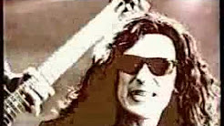
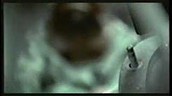
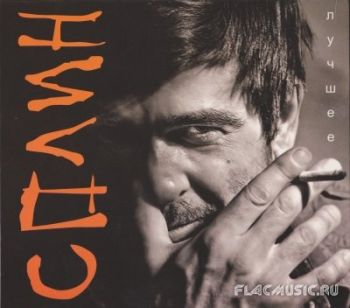
Splean (Russian: Сплин) is a popular Russian rock band. They were formed and released their first album in 1994. Since then, they have remained one of the most popular rock bands in Russia and the former Soviet Union. The band's name is derived from "spleen" (in the sense of "depression"), and the "ea" spelling in English is a pun on the spelling of the Beatles. It was borrowed from a short poem by Sasha Cherny, which the band set to music.
Members:
• Alexander Vasilyev - lead vocals, guitar
• Vadim Sergeyev - guitar
• Dmitriy Kunin - bass-guitar
• Nikolay Rostovsky - keyboards
• Alexey Mesherekov - drums
• "Пыльная Быль" (Dusty Fact), 1994
• "Коллекционер Оружия" (Arms Collector), 1996
• "Фонарь под Глазом" (Black Eye, lit. Lamp Under the Eye), 1997
• "Гранатовый Альбом" (Pomegranate Album), 1998
• "Альтависта" (Altavista), 1999
• "Зн@менатель (сборник песен для радио)" (Denomin@tor (collection of songs for the radio)), 1999
• "Альтависта live" (Altavista live), 2000
• "25 кадр" (25th Frame), 2001
• "Акустика" (Unplugged), 2002
• "Новые Люди" (New People), 2003
• "Реверсивная Хроника Событий" (Reversed Chronicle of Events), 2004
• "Раздвоение Личности" (Split Personality), 2007
• "Сигнал из Космоса" (Signal From Space), 2009
• "Обман Зрения" (Optical Illusion), 2012
• "Резонанс. Часть 1" (Resonance. Part 1), 2014
• "Резонанс. Часть 2" (Resonance. Part 2), 2014
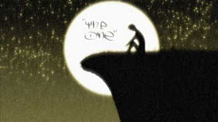
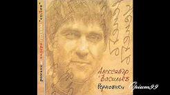
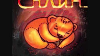
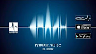
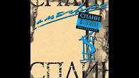
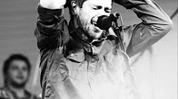
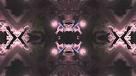
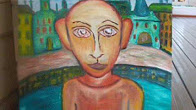
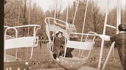
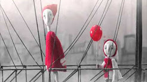
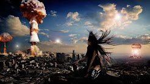
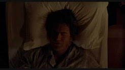
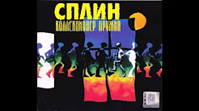
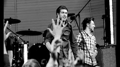
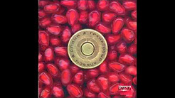
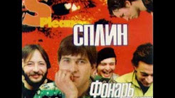
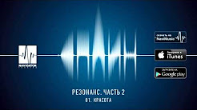
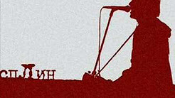
Zemfira, born Zemfira Talgatovna Ramazanova (Russian: Земфира Талгатовна Рамазанова, Tatar: Земфира Тәлгать кызы Рамазанова, Zemfira Tälğät qızı Ramazanova; born 26 August 1976 in Ufa, Bashkortostan) is a Russian rock musician. She has been performing since 1998 and has been popular in Russia and other former Soviet republics. To date Zemfira has sold over 3 million records.
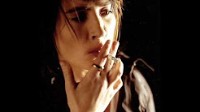
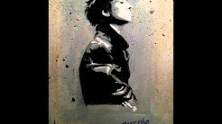
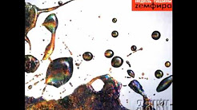
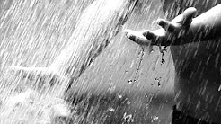
Zveri (Beasts; Russian: Звери) is a Russian pop rock band.
• 2003 - Голод (Golod, Hunger)
• 2004 - Районы-кварталы (Rayoni-Kvartali, Districts And Blocks)
• 2006 - Когда мы вместе никто не круче (Kogda Mi Vmeste Nikto Ne Kruche,When We Are Together No One Is Better)
• 2008 - Дальше (Dal'she, Then)
• 2011 - Музы (Muzi, Muses)
• 2014 - Один на один (Odin na odin, One on one)
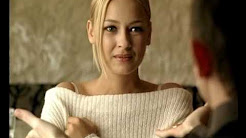